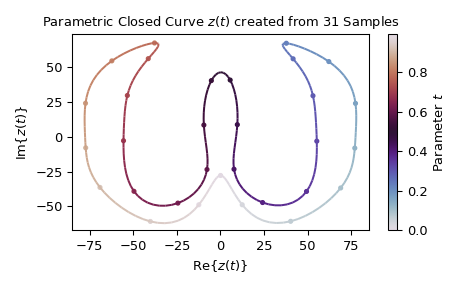
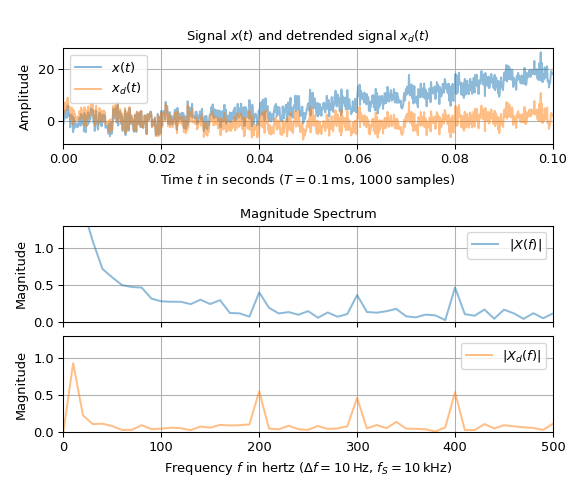
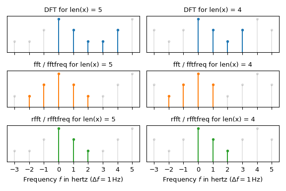

Discrete Fourier Transforms (scipy.fft)#
Fourier analysis is a method for expressing a function as a sum of periodic components, and for recovering the signal from those components. When both the function and its Fourier transform are replaced with discretized counterparts, it is called the discrete Fourier transform (DFT). The DFT has become a mainstay of numerical computing in part because of a very fast algorithm for computing it, called the Fast Fourier Transform (FFT), which was known to Gauss (1805) and was brought to light in its current form by Cooley and Tukey [1]. Press et al. [2] provide an accessible introduction to Fourier analysis and its applications.
This chapter is structured as follows: The first section defines the discrete Fourier transform and presents its key properties. The second section discusses the relationship to continuous Fourier series and introduces various forms of its Fourier transform. Then practical implications, which mainly results from the DFT’s periodicity properties, are discussed in the Caveats section. The remaining sections give definitions of higher-dimensional DFTs, discrete sine and cosine transforms as well as the Hankel transform.
The Discrete Fourier Transform#
The discrete Fourier Transform [3] is a one-to-one mapping between two complex-valued sequences of length \(N\). The mappings between \(x[k], X[l]\in\IC\), with \(k, l \in\{0, \ldots, N-1\}\), are defined by
which are implemented by the fft / ifft
functions. \(\gamma\) is a normalization constant, which is set by the norm
parameter. It may have the values \(1\) (norm='backward', default),
\(N\) (norm='forward'), or \(\sqrt{N}\) (norm='ortho').
Note that \(X[l]\) can be continued periodically outside its domain \(\{0, \ldots, N-1\}\). I.e., \(X[l+pN] = X[l]\) for \(p\in\IZ\) when \(X[l]\) is calculated with Eq. (1). This allows to define the DFT over shifted coefficients, e.g., using \(l\in\{-N//2, \ldots, (N-1)-N//2\}\). The same holds for \(x[k]\): When determined with Eq. (1), \(x[k + pN] = x[k]\), \(p \in\IZ\) is true.
This DFT can be rewritten in vector-matrix form as
with the matrix \(\mF\in\IC^{N\times N}\) being symmetric, i.e., \(\mF^T=\mF\). It has the elements \(F[l, k] = \exp(-\jj2\pi l k / N)\) and allows the DFT and its inverse to be expressed as
with \(\conjT{\mF}\) being the conjugate transpose of \(\mF\). It can be shown
that \(\conjT{\mF}\mF = N\mI\) holds and thus \(\mF^{-1} = \conjT{\mF}/N\),
which makes it straightforward to verify that the two relations of Eq.
(1) are inverses of each other. The linalg module
provides the function dft to calculate the matrix \(\mF /
\gamma\):
>>> import numpy as np
>>> from scipy.linalg import dft
>>> from scipy.fft import fft
>>> np.set_printoptions(precision=2, suppress=True) # for compact output
...
>>> dft(4)
array([[ 1.+0.j, 1.+0.j, 1.+0.j, 1.+0.j],
[ 1.+0.j, 0.-1.j, -1.-0.j, -0.+1.j],
[ 1.+0.j, -1.-0.j, 1.+0.j, -1.-0.j],
[ 1.+0.j, -0.+1.j, -1.-0.j, 0.-1.j]])
>>> fft(np.eye(4)) # produces the same matrix
array([[ 1.-0.j, 1.+0.j, 1.-0.j, 1.-0.j],
[ 1.-0.j, 0.-1.j, -1.-0.j, 0.+1.j],
[ 1.-0.j, -1.+0.j, 1.-0.j, -1.-0.j],
[ 1.-0.j, 0.+1.j, -1.-0.j, 0.-1.j]])
This notation makes it also easy to show that the DFT changes the inner product (or scalar product) only by the scaling factor \(N/\gamma^2\). I.e., expressing the inner product of \(\vb{X}\) and \(\vb{Y}\) in terms of \(\vb{x}\) and \(\vb{y}\) gives
This illustrates that the DFT is a unitary transform for \(\gamma = \sqrt{N}\). The sums of the absolute squares are a special case, i.e.,
Note that the sum of the unsquared values can be retrieved from the zeroth DFT component, i.e.,
The circular convolution of two sequences of length \(N\), i.e.,
can be expressed as a multiplication of their DFTs and vice versa, i.e.,
Here, the circular convolution is defined over finite length sequences, whereas in
literature it is often defined over infinite length sequences. For sufficiently large
\(N\) (roughly: \(N > 500\)), it is typically computationally more efficient to
use this multiplication together with the fft /
ifft functions than to calculate the convolution directly. Note that
convolve, fftconvolve and
numpy.convolve implement the non-circular convolution by using appropriate
zero-padding before applying the FFT.
Fourier Series and the DFT#
A Fourier series
with \(N=2N_2+1\) complex-valued Fourier coefficients \(c_l\) represents a closed curve \(z: [0, \tau] \mapsto \IC\). Determining the values of \(N\) equidistant samples with sampling interval \(T := \tau / N\), i.e.,
may be interpreted as a shifted version the inverse DFT of Eq. (1). Since the (inverse) DFT is a one-to-one mapping, the \(N\) samples are an alternative representation of the \(N\) Fourier coefficients. Here, the scaling factor \(\gamma/N\) exists only to ensure notational consistency with Eq. (1).
The following example produces a closed curve \(z(t)\) resembling the letter ω by
utilizing a Fourier series: The Fourier coefficients are calculated by the
fft function from 31 provided samples. In the plot, the dots
represent the samples \(z[k]\) and the coloration of the line the value of the
parameter \(t\in[0, 1]\). Since the fft function expects indexes
\(\{0,\ldots,N-1\}\) but \(z(t)\) is defined on the indexes
\(\{-N_2,\ldots,N_2\}\), the fftshift function is utilized.
import matplotlib.pyplot as plt
import numpy as np
from matplotlib.collections import LineCollection
from scipy.fft import fft, fftshift
z_pts = [ 0.1-27.8j, 12.5-48.9j, 40.3-60.8j, 69.0-36.8j, 77.1- 8.1j, 77.5+24.1j,
62.2+54.2j, 37.8+67.4j, 41.7+56.2j, 53.1+29.6j, 55.3- 3.1j, 49.4-39.3j,
24.2-47.3j, 7.8-23.3j, 9.7+ 8.8j, 5.6+40.9j, -5.2+40.5j, -9.5+ 8.5j,
-7.7-23.5j, -24.4-47.7j, -49.6-39.2j, -55.6- 2.8j, -53.4+29.8j, -41.4+56.3j,
-37.8+67.6j, -62.3+54.7j, -77.4+24.2j, -77.3- 7.9j, -69.1-36.4j, -40.2-60.9j,
-12.4-48.9j]
z_pts = np.asarray(z_pts) # the samples
cc = fftshift(fft(z_pts, norm='forward')) # calculate Fourier coefficients
# Use Fourier series to calculate curve points:
N, k0 = len(z_pts), -(len(cc) // 2) # number of samples, first Fourier series index
t = np.linspace(0, 1, N * 8, endpoint=False)
z = sum(c_k * np.exp(2j * np.pi * k * t) for k, c_k in enumerate(cc, start=k0))
fg0, ax0 = plt.subplots(1, 1, tight_layout=True)
ax0.set(title=f"Parametric Closed Curve $z(t)$ created from {N} Samples",
xlabel=r"Re$\{z(t)\}$", ylabel=r"Im$\{z(t)\}$")
ax0.scatter(z_pts.real, z_pts.imag, c=np.arange(N) / N, s=8, cmap='twilight')
lpts = np.stack((z.real, z.imag), axis=1) # extract 2d points
ln0 = ax0.add_collection(LineCollection(np.stack((lpts[:-1], lpts[1:]), axis=1),
array=t[:-1], cmap='twilight'))
cb0 = fg0.colorbar(ln0, label="Parameter $t$")
plt.show()

Remarks:
That the plot is a closed curve is due to the periodic nature of Fourier series, i.e., \(z(t+p\tau) = z(t)\,,\ p\in\IZ\). As a consequence, a given closed curve can be represented by various Fourier series and with that by various sets of samples. E.g., increasing the number of samples can be achieved by adding zero-valued Fourier coefficients to their DFT and then calculating the corresponding inverse DFT. This technique is used in the
resamplefunction.A Fourier series is a decomposition of a complex-valued closed curve into circular closed curves with various frequencies: The \(l\)-th term \(z_l(t) := \tfrac{\gamma}{N} c_l\, \exp(\jj2\pi l t / \tau)\) may be interpreted as a circular curve centered at the origin with radius \(|\gamma c_l / N|\) and starting point \(z_l(0)= \gamma c_l / N\). For \(t\in[0,\tau]\), it cycles the circle \(l\) times in counterclockwise direction if \(l > 0\) or clockwise direction if \(l < 0\). The number of cycles per unit interval, i.e, \(f_l := l / \tau\), is usually called the frequency of \(z_l(t)\) (having the same sign as \(l\)). The
fftfreqfunction determines those corresponding frequencies for the Fourier coefficients.Especially in signal processing, \(t\) frequently represents time. Hence, the sample values \(z[k]\) with their associated sample times \(t[k] = k T\) are commonly referred to as being in the so-called “time-domain”, whereas coefficients \(c_l\) with their associated frequency values \(f_l = l \Delta f\) with \(\Delta f := 1/\tau = 1 / (NT)\), are referred as to being in the so-called “frequency domain” or “Fourier domain”.
If only real-valued curves are of interest, then \(\Im\{z(t)\} = \big(z(t) - \conj{z(t)}\big)/2\jj \equiv 0\) holds. This is equivalent to \(z(t) = \conj{z(t)}\) as well as to \(c_l = \conj{c_{-l}}\). As a consequence, for DFTs with real-valued inputs only the non-negative DFT coefficients need to be calculated. This is implemented by the
rfft/irfft/rfftfreqfunctions.
Besides the DFT, other variations for calculating a Fourier transform of a Fourier series exist. The important case of extending the domain from the fixed interval \([0, \tau]\) to the real axis \(\IR\) is discussed in the following: When assuming \(z(t)\equiv 0\) holds for \(t \not\in[0, \tau]\), it is straightforward to apply the continuous Fourier transform to the Fourier Series of Eq. (3):
with \(\sinc(f) := \sin(\pi f) / (\pi f)\). Note that \(Z(f)\) is continuous and its support extends over the complete real axis. The DFT may be interpreted as sampling the continuous Fourier transform due to
being true. When continuing \(z(t)\) periodically outside the interval \([0, \tau]\), i.e.,
then the continuous Fourier transform can be expressed as
where \(\delta(.)\) denotes the Dirac delta function. Note that \(Z_p(f)\) is only non-zero at multiples of \(\Delta f\). Furthermore, \(Z_p(f)\) is bandlimited, i.e., \(Z_p(f)\equiv 0\) for \(|f| > N \Delta f / 2 = 1 / (2T)\). In signal processing, \(f_S := 1/T\) is usually referred to as sampling frequency and \(f_\text{Ny} := f_S / 2 = 1 / (2T)\) is called the Nyquist frequency.
The so-called “discrete-time Fourier transform” (DTFT) [4] of the sampled signal \(z_p[k] := z_p(kT)\) is defined as
with \(\Omega:= 2\pi f/f_S = 2\pi f T\). The convention of using the normalized frequency \(\Omega\) instead of \(f\) is common in signal processing. \(Z_p^\text{DTFT}(f)\) is a continuous function in \(f\) with a periodicity of \(f_S\). Due to \(z_p[k]\) being periodic in \(N\), it can be expressed in terms of the Fourier coefficients as
Hence, the DTFT may be interpreted as a periodic continuation of \(Z_p(f)\), i.e., as the periodic continuation in \(f\) of the Fourier transform of the continuous-time periodic signal.
A brief introduction about analyzing the spectral properties of sampled signals can be found in the Spectral Analysis section.
Caveats#
This subsection briefly discusses practical implications of the periodicity properties of Fourier transforms and provides recommendations for improving computational efficiency.
Periodicity in the Time Domain#
When working with sampled signals, it is typically assumed that the underlying
continuous signals are represented by Fourier series. The circumstance that to
accurately model signals with discontinuities requires many Fourier coefficients is
known as Gibbs phenomenon. Since Fourier series are inherently periodic, representing
non-periodic signals introduces artificial discontinuities. A common technique to make
non-periodic signals “more” periodic is subtracting a best-fit polynomial.
detrend can be used to subtract a signal’s mean (0th
order polynomial) or linear trend (1st order polynomial). NumPy’s
Polynomial class provides means to
fit higher order polynomials.
The following example illustrates the effect of removing the linear trend from a noisy signal on its spectrum: The signal \(x(t)\) is represented by \(N=1000\) samples with a sampling interval of \(T=0.1\,\)ms. The first row depicts \(x(t)\) (with linear trend) and \(x_d(t)\) (with removed linear trend). To determine the periodic components, a magnitude spectrum of \(x(t)\) and of \(x_d(t)\) is calculated and drawn is second and third row.
import matplotlib.pyplot as plt
import numpy as np
from scipy.fft import rfft, rfftfreq
from scipy.signal import detrend
rng = np.random.default_rng() # seeding with default seed for reproducibility
N, tau = 1000, 0.1 # number of samples and signal duration in seconds
T = tau / N # sampling interval
t = np.arange(N) * T # sample times
# Create signal:
x_sines = sum(np.sin(2 * np.pi * f_ * t) for f_ in [200, 300, 400])
x_drift = 1e3 * (1 - np.cos(2*t)) # almost linear drift
x_noise = rng.normal(scale=np.sqrt(5), size=t.shape) # Gaussian noise
x = x_drift + x_sines + x_noise # the signal
x_d = detrend(x, type='linear') # signal with linear trend removed
f = rfftfreq(N, T) # frequency values
aX, aX_d = abs(rfft(x) / N), abs(rfft(x_d) / N) # Magnitude spectrum
fig = plt.figure(figsize=(6., 5.))
ax0, ax1, ax2 = [fig.add_axes((0.11, bottom, .85, .2)) for bottom in [.7, .33, .1]]
for c_, (x_, n_) in enumerate(zip((x, x_d), ("$x(t)$", "$x_d(t)$"))):
ax0.plot(t, x_, f'C{c_}-', alpha=0.5, label=n_)
ax0.set(title="Signal $x(t)$ and detrended signal $x_d(t)$", ylabel="Amplitude",
xlabel=rf"Time $t$ in seconds ($T={1e3*T:g}\,$ms, {N} samples)", xlim=(0, tau))
for c_, (ax_, aX_, n_) in enumerate(zip((ax1, ax2), (aX, aX_d), ("X", "X_d"))):
ax_.plot(f, aX_, f'C{c_}-', alpha=0.5, label=f"$|{n_}(f)|$")
ax_.set(xlim=(0, 500), ylim=(0, 1.3), ylabel="Magnitude")
ax1.set(title="Magnitude Spectrum", xticklabels=[])
ax2.set_xlabel(rf"Frequency $f$ in hertz ($Δf={f[1]:g}\,$Hz, $f_S={1e-3/T:g}\,$kHz)")
for ax_ in (ax0, ax1, ax2):
ax_.grid(True)
ax_.legend()
plt.show()

The signal’s trend manifests as a decreasing slope in the spectrum’s low-frequency part. Removing the linear trend steepens this slope significantly, making the peaks at \(200\), \(300\), and \(400\,\)Hz much better distinguishable. These peaks, which correspond to the sinusoidal components of \(x(t)\), would have a magnitude of \(0.5\) in a noise- and trend-free signal.
Note that detrending a signal does not necessarily improve its spectrum. I.e., periodic components whose frequencies are not integer multiples of the frequency resolution \(\Delta f\) produce a trend that should not be removed. More information on calculating and interpreting spectra can be found in the Spectral Analysis section.
Periodicity in the Frequency Domain#
The following plot compares fft and rfft
representations of two signals made up of an odd number (\(N=5\), left column) and
an even number of samples (\(N=4\), right column). The real-valued input signals
were chosen in such a way so that their Fourier transforms are real-valued, i.e.,
x[k] = x[N-k]. The first row shows the DFTs of Eq. (1) with
its non-negative frequencies. The gray stems represent the periodic continuation to the
left and to the right. The center row shows the fft with the shifted
frequencies produced by fftfreq, where the two highest frequencies
are shifted to the negative side. The last row depicts the one-sided
rfft, which produces only the non-negative frequencies of the
(two-sided) fft.
import matplotlib.pyplot as plt
import numpy as np
from scipy.fft import fft, fftfreq, irfft, rfft, rfftfreq
# Create signals:
x0 = np.array([4, 1, 0, 1])
x1 = irfft(rfft(x0), n=5) # Here: rfft(x1) == rfft(x0)
tau = 1 # signal duration in seconds
ll = np.arange(-3, 6) # indices of DFT coefficients
_, ax01 = plt.subplots(3, 2, sharex='col', tight_layout=True, figsize=(6., 4.))
for x, axx in zip((x1, x0), ax01.T):
N = len(x) # number of samples
T, delta_f = tau / N, 1 / tau # sampling interval and frequency resolution
kk = np.arange(0, N) # sample indices of DFT
X_DFT = np.array([sum(x * np.exp(-2j * np.pi * l_ * kk / N)) for l_ in ll])
f_DFT = ll * delta_f # frequencies of DFT
XX = fft(x), fft(x), rfft(x) # DFT values and FFT values coincide
ff = np.arange(N) * delta_f, fftfreq(N, T), rfftfreq(N, T)
t_strs = ["DFT", "fft / fftfreq", "rfft / rfftfreq"] # do the plotting:
for p, (ax, f, X, ts) in enumerate(zip(axx, ff, XX, t_strs)):
lns = axx[p].stem(f_DFT, abs(X_DFT), linefmt='k-', markerfmt="k.", basefmt=' ')
[ln_.set_alpha(0.1) for ln_ in lns] # set transparency
axx[p].stem(f, abs(X), linefmt=f'C{p}-', markerfmt=f'C{p}.', basefmt=' ')
ax.set(title=f"{ts} for len(x) = {N}", yticks=[], ylim=(0, 6.5))
axx[-1].set(xticks=f_DFT, xlim=(f_DFT[0]-0.5, f_DFT[-1]+0.5))
axx[-1].set_xlabel(rf"Frequency $f$ in hertz ($\Delta f ={delta_f:g}\,$Hz)")
plt.show()

This plot illustrates the following two aspects:
For an odd number of samples (here: \(N=5\)),
fftfreqproduces an equal number of positive and negative frequencies, i.e.[-2, -1, 0, 1, 2]. For an even number of samples (here: \(N=4\)), it would be valid to have either the frequencies,[-2, -1, 0, 1]or the frequencies[-1, 0, 1, 2]due to the FFT values at \(f = \pm2\,\)Hz being identical. By convention,fftfreqplaces the Nyquist frequency \(f_\text{Ny} = \Delta f\, N/2 = 2\,\)Hz on the negative side.Here, the
rfftvalues for input lengths of \(N=4,5\) are equal in spite of the input signals being different. This illustrates that the number of signal samples N need to be passed toirfftto be able reconstruct the original signal, e.g.:>>> import numpy as np >>> from scipy.fft import fft, irfft, rfft ... >>> x = np.array([4, 1, 0, 1]) # n = 4 >>> X = rfft(x) >>> y0, y1 = irfft(X, n=4), irfft(X, n=5) >>> np.allclose(y0, x) True >>> len(y1) == len(x) # signals differ False >>> np.allclose(rfft(y1), rfft(x)) # one-sided FFTs are equal True
Speed Considerations#
The efficiency of the FFT algorithm depends on how well the number of input samples
\(N\) can be factored into small prime factors. I.e., it is slowest if \(N\) is
prime and fastest if \(N\) is a power of 2. The fft module provides
the functions prev_fast_len and next_fast_len for
determining adequate input lengths for fast execution.
Furthermore, the fft module provides also the context manager
set_workers to set the maximum number of allowed threads when
calculating the FFT. Note that some third-party FFT libraries provide SciPy backends,
which can be activated by utilizing set_backend.
2- and N-D discrete Fourier transforms#
The functions fft2 and ifft2 provide 2-D FFT and
IFFT, respectively. Similarly, fftn and ifftn provide
N-D FFT, and IFFT, respectively.
For real-input signals, similarly to rfft, we have the functions
rfft2 and irfft2 for 2-D real transforms;
rfftn and irfftn for N-D real transforms.
The example below demonstrates a 2-D IFFT and plots the resulting (2-D) time-domain signals.
>>> from scipy.fft import ifftn
>>> import matplotlib.pyplot as plt
>>> import matplotlib.cm as cm
>>> import numpy as np
>>> N = 30
>>> f, ((ax1, ax2, ax3), (ax4, ax5, ax6)) = plt.subplots(2, 3, sharex='col', sharey='row')
>>> xf = np.zeros((N,N))
>>> xf[0, 5] = 1
>>> xf[0, N-5] = 1
>>> Z = ifftn(xf)
>>> ax1.imshow(xf, cmap=cm.Reds)
>>> ax4.imshow(np.real(Z), cmap=cm.gray)
>>> xf = np.zeros((N, N))
>>> xf[5, 0] = 1
>>> xf[N-5, 0] = 1
>>> Z = ifftn(xf)
>>> ax2.imshow(xf, cmap=cm.Reds)
>>> ax5.imshow(np.real(Z), cmap=cm.gray)
>>> xf = np.zeros((N, N))
>>> xf[5, 10] = 1
>>> xf[N-5, N-10] = 1
>>> Z = ifftn(xf)
>>> ax3.imshow(xf, cmap=cm.Reds)
>>> ax6.imshow(np.real(Z), cmap=cm.gray)
>>> plt.show()
!["This code generates six heatmaps arranged in a 2x3 grid. The top row shows mostly blank canvases with the exception of two tiny red peaks on each image. The bottom row shows the real-part of the inverse FFT of each image above it. The first column has two dots arranged horizontally in the top image and in the bottom image a smooth grayscale plot of 5 black vertical stripes representing the 2-D time domain signal. The second column has two dots arranged vertically in the top image and in the bottom image a smooth grayscale plot of 5 horizontal black stripes representing the 2-D time domain signal. In the last column the top image has two dots diagonally located; the corresponding image below has perhaps 20 black stripes at a 60 degree angle."](../_images/fft-1.png)
Discrete Cosine Transforms#
SciPy provides a DCT with the function dct and a corresponding IDCT
with the function idct. There are 8 types of the DCT [5] [6];
however, only the first 4 types are implemented in SciPy. “The” DCT generally
refers to DCT type 2, and “the” Inverse DCT generally refers to DCT type 3. In
addition, the DCT coefficients can be normalized differently (for most types,
scipy provides None and ortho). Two parameters of the dct/idct
function calls allow setting the DCT type and coefficient normalization.
For a single dimension array x, dct(x, norm='ortho') is equal to
MATLAB’s “dct(x)”.
Type I DCT#
SciPy uses the following definition of the unnormalized DCT-I
(norm=None):
Note that the DCT-I is only supported for input size > 1.
Type II DCT#
SciPy uses the following definition of the unnormalized DCT-II
(norm=None):
In case of the normalized DCT (norm='ortho'), the DCT coefficients
\(y[k]\) are multiplied by a scaling factor f:
In this case, the DCT “base functions” \(\phi_k[n] = 2 f \cos \left({\pi(2n+1)k \over 2N} \right)\) become orthonormal:
Type III DCT#
SciPy uses the following definition of the unnormalized DCT-III
(norm=None):
or, for norm='ortho':
Type IV DCT#
SciPy uses the following definition of the unnormalized DCT-IV
(norm=None):
or, for norm='ortho':
DCT and IDCT#
The (unnormalized) DCT-III is the inverse of the (unnormalized) DCT-II, up to a
factor of 2N. The orthonormalized DCT-III is exactly the inverse of the
orthonormalized DCT- II. The function idct performs the mappings between
the DCT and IDCT types, as well as the correct normalization.
The following example shows the relation between DCT and IDCT for different types and normalizations.
>>> from scipy.fft import dct, idct
>>> x = np.array([1.0, 2.0, 1.0, -1.0, 1.5])
The DCT-II and DCT-III are each other’s inverses, so for an orthonormal transform we return back to the original signal.
>>> dct(dct(x, type=2, norm='ortho'), type=3, norm='ortho')
array([ 1. , 2. , 1. , -1. , 1.5])
Doing the same under default normalization, however, we pick up an extra scaling factor of \(2N=10\) since the forward transform is unnormalized.
>>> dct(dct(x, type=2), type=3)
array([ 10., 20., 10., -10., 15.])
For this reason, we should use the function idct using the same type for both,
giving a correctly normalized result.
>>> # Normalized inverse: no scaling factor
>>> idct(dct(x, type=2), type=2)
array([ 1. , 2. , 1. , -1. , 1.5])
Analogous results can be seen for the DCT-I, which is its own inverse up to a factor of \(2(N-1)\).
>>> dct(dct(x, type=1, norm='ortho'), type=1, norm='ortho')
array([ 1. , 2. , 1. , -1. , 1.5])
>>> # Unnormalized round-trip via DCT-I: scaling factor 2*(N-1) = 8
>>> dct(dct(x, type=1), type=1)
array([ 8. , 16., 8. , -8. , 12.])
>>> # Normalized inverse: no scaling factor
>>> idct(dct(x, type=1), type=1)
array([ 1. , 2. , 1. , -1. , 1.5])
And for the DCT-IV, which is also its own inverse up to a factor of \(2N\).
>>> dct(dct(x, type=4, norm='ortho'), type=4, norm='ortho')
array([ 1. , 2. , 1. , -1. , 1.5])
>>> # Unnormalized round-trip via DCT-IV: scaling factor 2*N = 10
>>> dct(dct(x, type=4), type=4)
array([ 10., 20., 10., -10., 15.])
>>> # Normalized inverse: no scaling factor
>>> idct(dct(x, type=4), type=4)
array([ 1. , 2. , 1. , -1. , 1.5])
Example#
The DCT exhibits the “energy compaction property”, meaning that for many signals only the first few DCT coefficients have significant magnitude. Zeroing out the other coefficients leads to a small reconstruction error, a fact which is exploited in lossy signal compression (e.g. JPEG compression).
The example below shows a signal x and two reconstructions (\(x_{20}\) and \(x_{15}\)) from the signal’s DCT coefficients. The signal \(x_{20}\) is reconstructed from the first 20 DCT coefficients, \(x_{15}\) is reconstructed from the first 15 DCT coefficients. It can be seen that the relative error of using 20 coefficients is still very small (~0.1%), but provides a five-fold compression rate.
>>> from scipy.fft import dct, idct
>>> import matplotlib.pyplot as plt
>>> N = 100
>>> t = np.linspace(0,20,N, endpoint=False)
>>> x = np.exp(-t/3)*np.cos(2*t)
>>> y = dct(x, norm='ortho')
>>> window = np.zeros(N)
>>> window[:20] = 1
>>> yr = idct(y*window, norm='ortho')
>>> sum(abs(x-yr)**2) / sum(abs(x)**2)
0.0009872817275276098
>>> plt.plot(t, x, '-bx')
>>> plt.plot(t, yr, 'ro')
>>> window = np.zeros(N)
>>> window[:15] = 1
>>> yr = idct(y*window, norm='ortho')
>>> sum(abs(x-yr)**2) / sum(abs(x)**2)
0.06196643004256714
>>> plt.plot(t, yr, 'g+')
>>> plt.legend(['x', '$x_{20}$', '$x_{15}$'])
>>> plt.grid()
>>> plt.show()
!["This code generates an X-Y plot showing amplitude on the Y axis and time on the X axis. The first blue trace is the original signal and starts at amplitude 1 and oscillates down to 0 amplitude over the duration of the plot resembling a frequency chirp. The second red trace is the x_20 reconstruction using the DCT and closely follows the original signal in the high amplitude region but it is unclear to the right side of the plot. The third green trace is the x_15 reconstruction using the DCT and is less precise than the x_20 reconstruction but still similar to x."](../_images/fft-2.png)
Discrete Sine Transforms#
SciPy provides a DST [6] with the function dst and a corresponding IDST
with the function idst.
There are, theoretically, 8 types of the DST for different combinations of even/odd boundary conditions and boundary offsets [7], only the first 4 types are implemented in SciPy.
Type I DST#
DST-I assumes the input is odd around n=-1 and n=N. SciPy uses the following
definition of the unnormalized DST-I (norm=None):
Note also that the DST-I is only supported for input size > 1. The
(unnormalized) DST-I is its own inverse, up to a factor of 2(N+1).
Type II DST#
DST-II assumes the input is odd around n=-1/2 and even around n=N. SciPy uses
the following definition of the unnormalized DST-II (norm=None):
Type III DST#
DST-III assumes the input is odd around n=-1 and even around n=N-1. SciPy uses
the following definition of the unnormalized DST-III (norm=None):
Type IV DST#
SciPy uses the following definition of the unnormalized DST-IV
(norm=None):
or, for norm='ortho':
DST and IDST#
The following example shows the relation between DST and IDST for different types and normalizations.
>>> from scipy.fft import dst, idst
>>> x = np.array([1.0, 2.0, 1.0, -1.0, 1.5])
The DST-II and DST-III are each other’s inverses, so for an orthonormal transform we return back to the original signal.
>>> dst(dst(x, type=2, norm='ortho'), type=3, norm='ortho')
array([ 1. , 2. , 1. , -1. , 1.5])
Doing the same under default normalization, however, we pick up an extra scaling factor of \(2N=10\) since the forward transform is unnormalized.
>>> dst(dst(x, type=2), type=3)
array([ 10., 20., 10., -10., 15.])
For this reason, we should use the function idst using the same type for both,
giving a correctly normalized result.
>>> idst(dst(x, type=2), type=2)
array([ 1. , 2. , 1. , -1. , 1.5])
Analogous results can be seen for the DST-I, which is its own inverse up to a factor of \(2(N-1)\).
>>> dst(dst(x, type=1, norm='ortho'), type=1, norm='ortho')
array([ 1. , 2. , 1. , -1. , 1.5])
>>> # scaling factor 2*(N+1) = 12
>>> dst(dst(x, type=1), type=1)
array([ 12., 24., 12., -12., 18.])
>>> # no scaling factor
>>> idst(dst(x, type=1), type=1)
array([ 1. , 2. , 1. , -1. , 1.5])
And for the DST-IV, which is also its own inverse up to a factor of \(2N\).
>>> dst(dst(x, type=4, norm='ortho'), type=4, norm='ortho')
array([ 1. , 2. , 1. , -1. , 1.5])
>>> # scaling factor 2*N = 10
>>> dst(dst(x, type=4), type=4)
array([ 10., 20., 10., -10., 15.])
>>> # no scaling factor
>>> idst(dst(x, type=4), type=4)
array([ 1. , 2. , 1. , -1. , 1.5])
Fast Hankel Transform#
SciPy provides the functions fht and ifht to perform the Fast
Hankel Transform (FHT) and its inverse (IFHT) on logarithmically-spaced input
arrays.
The FHT is the discretized version of the continuous Hankel transform defined by [8]
with \(J_{\mu}\) the Bessel function of order \(\mu\). Under a change of variables \(r \to \log r\), \(k \to \log k\), this becomes
which is a convolution in logarithmic space. The FHT algorithm uses the FFT to perform this convolution on discrete input data.
Care must be taken to minimise numerical ringing due to the circular nature
of FFT convolution. To ensure that the low-ringing condition [8] holds,
the output array can be slightly shifted by an offset computed using the
fhtoffset function.